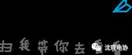

复习方法，请查收
1重点式复习法
2询问式复习法
是不是平时只和朋友一起嘻嘻哈哈玩玩闹闹开开心心快快乐乐，到了现在打开题目一脸茫然？
遇到不会的题目，向学习好的同学们询问，就是非常好的方法啦！但是询问也是要讲求方法和策略的，要懂得态度端正，取之有道，切不可竭泽而渔，捡了芝麻丢了西瓜。
3态度式复习法
4拒绝式复习法
是不是平时生活中的诱惑太多，手游端游NBA世界杯小说动漫电影电视剧还有恋爱，总是让我们总是分神？
到了现在的关键时期，要拒绝一切诱惑，把手机调到省电模式，关掉流量，卸载游戏，所有的一切等到考试结束，拒绝式复习法了解一下？
除了这些，还有许许多多的方法。
只要你想，就一定能取得更加优秀的成绩！



——编辑：阮倩雯